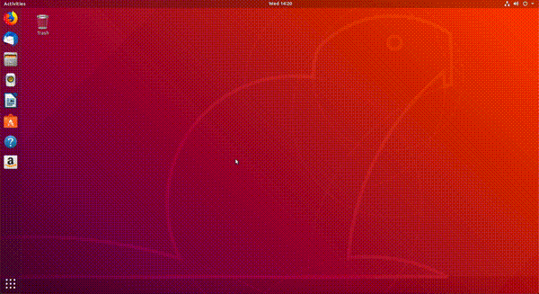

GNOME Terminal (uzual folosit terminalul) este o aplicație software, la fel ca LibreOffice și Firefox.
Terminalul este folosit, în general, pentru rularea aplicațiilor software (programe, utilitare) care nu au interfață grafică (GUI).
Exemple de astfel de aplicații / programe / utilitare sunt: ls, tree, ps și echo.
Toate acestea (și altele) vor fi prezentate ulterior în această carte.
Pentru moment este suficient să știm că ele există.
Folosim linia de comandă prin intermediul aplicației GNOME Terminal, care are identificatorul gnome-terminal.
Avem nevoie de linia de comandă ca să rezolvăm mai rapid unele taskuri.
Vom aprofunda aceste lucruri în capitolul Îmbunătățirealucruluiînliniadecomandă.
Fiind o aplicație ca oricare alta, avem mai multe moduri prin care putem să deschidem aplicația GNOME Terminal (la fel cum am menționat în secțiunea Pornirea și oprirea aplicațiilor):
Apăsând click dreapta și apoi butonul Open Terminal, ca în imaginea de mai jos:

Folosind combinația de taste Ctrl+Alt+t.
Pentru închiderea terminalului avem următoarele variante:
Folosind butonul x din partea dreaptă-sus a aplicației.
Avem următoarea situație: deschidem o aplicație din terminal și vrem să monitorizăm câte resurse folosește, totul din linia de comandă.
Ca să facem acest lucru, putem să deschidem două terminale: unul cu aplicația pe care vrem să o monitorizăm și unul în care pornim aplicația de monitorizare.
Pe lângă aceste două acțiuni, putem să avem nevoie să facem și altele, iar lucrul cu mai multe terminale deschise devine dificil.
La fel ca atunci când folosim un browser web, avem nevoie de taburi și în terminal.
În următoarele sub-subsecțiuni vom vorbi despre cum să deschidem, să închidem și să navigăm între taburile din terminal.
Deschidem un nou tab atunci când avem nevoie să facem o altă operație, fără a o întrerupe pe cea de acum.
Închidem taburile în momentul în care am terminat o operație pentru a nu încărca sistemul.
Putem deschide un nou tab în terminal în mai multe moduri:
Apăsând click dreapta în interiorul terminalului, după care pe butonul New Tab, ca în imaginea de mai jos:
Folosind combinația de taste Ctrl+Shift+t.
Putem închide un tab în terminal în mai multe moduri:
Folosind butonul (simbolul) x din dreptul tabului, ca în imaginea de mai jos:
Vrem să navigăm între taburile din terminal, la fel ca în cazul browserului web, pentru a putea trece de la o operație începută la alta rapid.
Avem mai multe variante să facem acest lucru:
Folosind clickuri, ca în imaginea de mai jos:
Folosind combinația de taste Alt+<număr>, unde număr este numărul (indexul) tabului la care vrem să ajungem.
Primul tab are numărul 1, al nouălea tab are numărul 9, iar al zecelea are numărul 0.
Combinațiile de taste folosite în terminal sunt similare cu cele din browser, prezentate în secțiunea Navigarea între taburi.
Pe lângă shortcuturile de pornire/oprire a terminalului, de lucru cu taburi în terminal, mai există și alte shortcuturi cu care, dacă le reținem, vom putea lucra în terminal foarte rapid.
În subsecțiunile următoare vom vorbi despre scrollul, copierea și lipirea textului în terminal și despre golirea ecranului de terminal.
Copierea și lipirea de text sunt operații foarte importante.
Vrem să evităm greșile de tastare pe cât posibil.
Folosirea acestor feature-uri este un mod de a preveni greșeli de tastare.